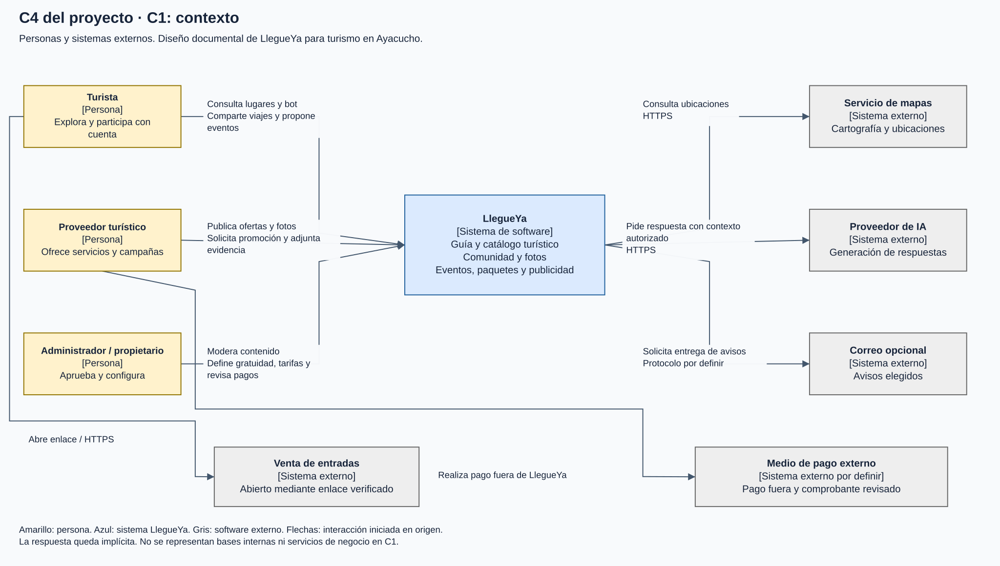
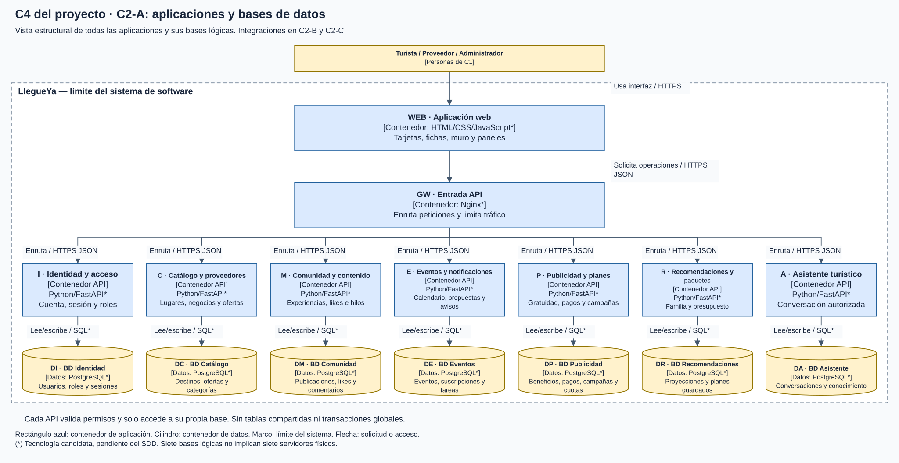
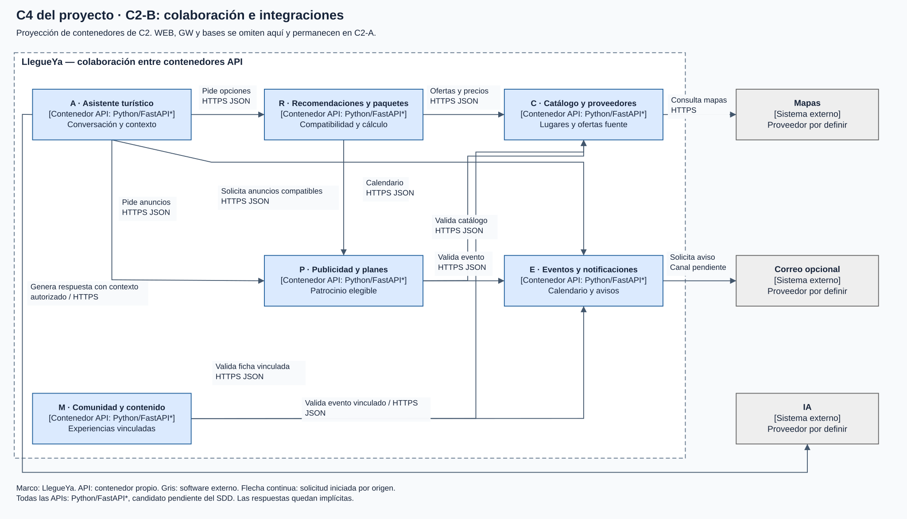
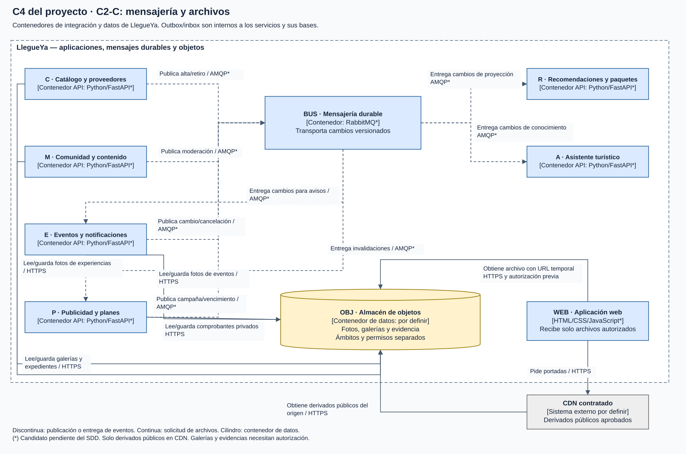
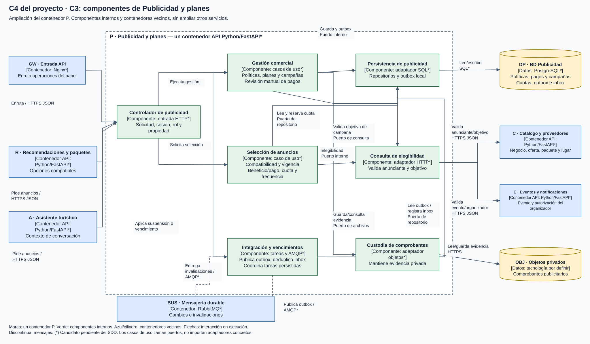
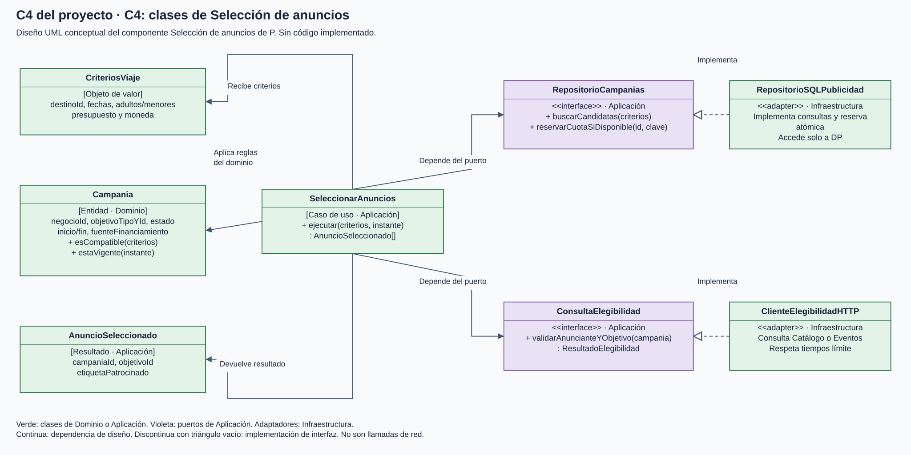
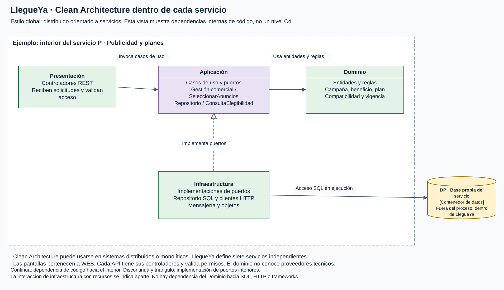
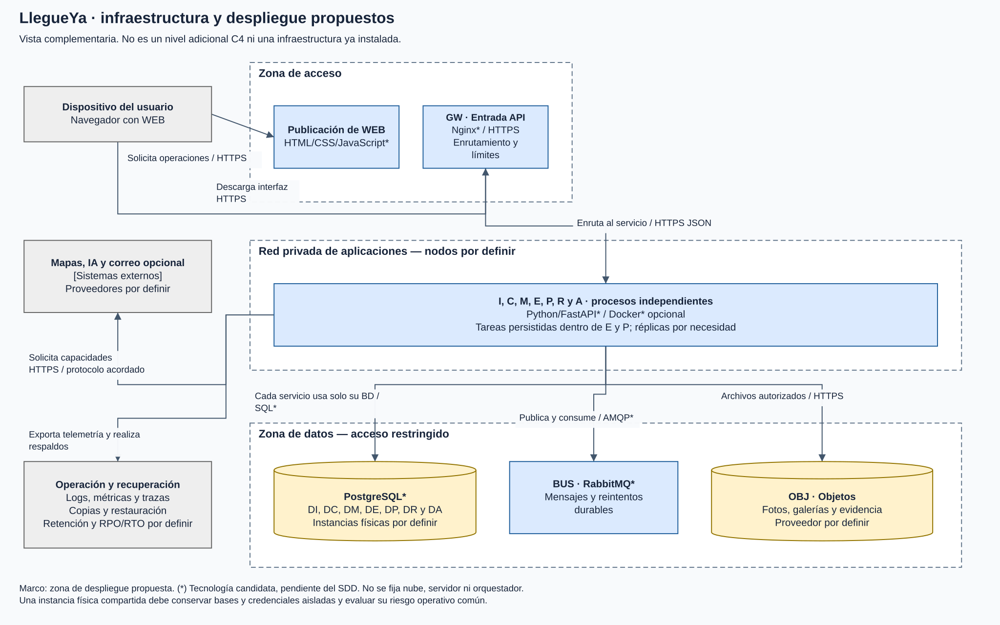

C4 del proyecto LlegueYa
Arquitectura distribuida orientada a siete servicios de negocio. Clean Architecture en cada servicio. Diseño documental sin implementación. Las tecnologías marcadas con * son candidatas pendientes del SDD.
Editar diagramas en Draw.ioGuía de lectura y documentación
C4 del proyecto · C1: contexto
Personas y sistemas externos. Diseño documental de LlegueYa para turismo en Ayacucho.
Abrir gráfico a tamaño completo
C4 del proyecto · C2-A: aplicaciones y bases de datos
Vista estructural de todas las aplicaciones y sus bases lógicas. Integraciones en C2-B y C2-C.
Abrir gráfico a tamaño completo
C4 del proyecto · C2-B: colaboración e integraciones
Proyección de contenedores de C2. WEB, GW y bases se omiten aquí y permanecen en C2-A.
Abrir gráfico a tamaño completo
C4 del proyecto · C2-C: mensajería y archivos
Contenedores de integración y datos de LlegueYa. Outbox/inbox son internos a los servicios y sus bases.
Abrir gráfico a tamaño completo
C4 del proyecto · C3: componentes de Publicidad y planes
Ampliación del contenedor P. Componentes internos y contenedores vecinos, sin ampliar otros servicios.
Abrir gráfico a tamaño completo
C4 del proyecto · C4: clases de Selección de anuncios
Diseño UML conceptual del componente Selección de anuncios de P. Sin código implementado.
Abrir gráfico a tamaño completo
LlegueYa · Clean Architecture dentro de cada servicio
Estilo global: distribuido orientado a servicios. Esta vista muestra dependencias internas de código, no un nivel C4.
Abrir gráfico a tamaño completo
LlegueYa · infraestructura y despliegue propuestos
Vista complementaria. No es un nivel adicional C4 ni una infraestructura ya instalada.
Abrir gráfico a tamaño completo